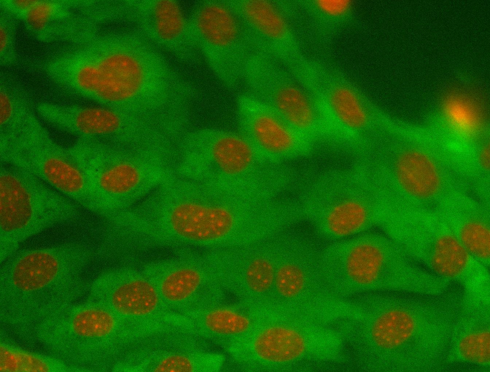
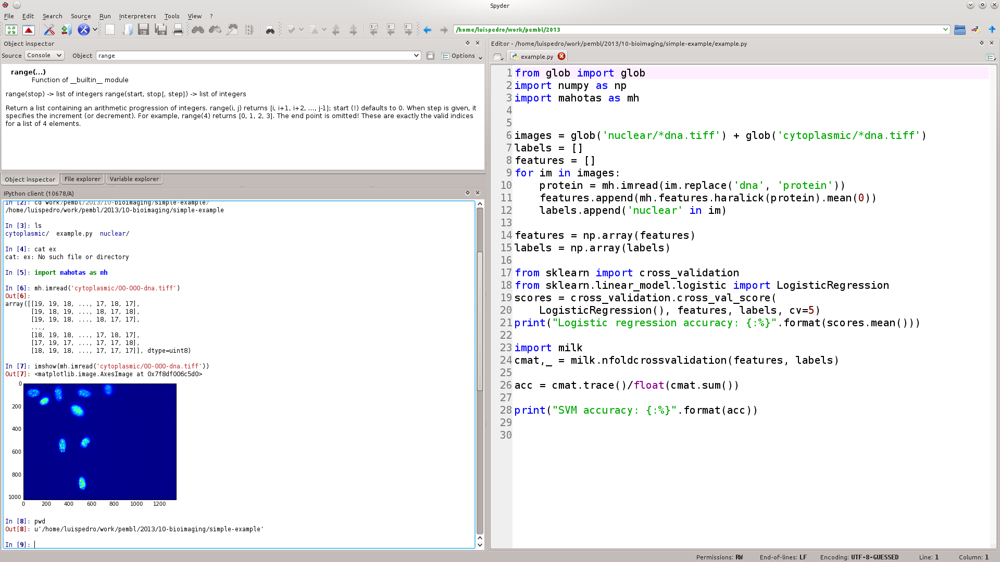

Mahotas and the Python Ecosystem for Bioimage Informatics Applications
Luis Pedro Coelho (EMBL) — Main developer of mahotas
On twitter: @luispedrocoelho
Python has a growing ecosystem of scientific packages around numpy
Numpy provides basic data types (arrays, matrices).
Packages provide intelligence.
The wider ecosystem

Multiple packages act together
Mahotas can rely on pre-existing functionality
- An image type (numpy array).
- Types to hold computed data (numpy array again).
- Plotting & displaying (matplotlib).
- Machine learning (sklearn or milk).
Modularity is good software engineering
- Improvements to one package benefit all.
- Separation of concerns.
Consistency also helps human users
- Single type for many uses.
- Many simple operations can be done in numpy.
- Same basic conventions.
- No copying/conversion of data between packages.
What can mahotas do for you?
- Image loading & writing
(including formats like LSM or STK). - Image filtering (morphological, Gaussian, &c)
- Feature computation (Haralick, LBPs, SURF, &c)
- Most functions work in 3D (or even 4D, 5D, up to 32D).
- Many utility functions (total is over 100 functions)
Mahotas' internal code is in C++
- It is also heavily optimized
- The same is true of other scientific packages
(Or they use C or Fortran)
Mahotas is general purpose, but was developed for bioimage informatics
Original goal:
to support the Murphy Lab pipeline with Python.
Has since grown.
A worked out example of using mahotas to classify some images
- Load images
- Compute features
- Use machine learning
I'm going to use a
subcellular determination problem as an example.
Example of cytoplasmic class
Example of nuclear class
Example of code (I): imports & init
from glob import glob
import numpy as np
import mahotas as mh
images = glob('nuclear/*dna.tiff') + glob('cytoplasmic/*dna.tiff')
labels = []
features = []
Example of code (II): compute features
for im in images:
protein = mh.imread(im.replace('dna', 'protein'))
features.append(mh.features.haralick(protein).mean(0))
labels.append('nuclear' in im)
features = np.array(features)
labels = np.array(labels)
Example of code (III): call sklearn
from sklearn import cross_validation
from sklearn.linear_model.logistic import LogisticRegression
scores = cross_validation.cross_val_score(
LogisticRegression(), features, labels, cv=5)
print("Logistic regression accuracy: {:%}".format(scores.mean()))
Example of code (IV): call milk
import milk
cmat,_ = milk.nfoldcrossvalidation(features, labels)
acc = cmat.trace()/float(cmat.sum())
print("SVM accuracy: {:%}".format(acc))
Let's See A Live Demonstration...

If you're coming from Matlab, Spyder will look familiar
Basic packages are stable, others are expanding

Mahotas releases...
- Version 1.0.3 October 6th
- Version 1.0.2. July 10th
- Version 1.0.1. July 9th
- Version 1.0. May 21st
- Version 0.99. April 22nd
- Version 0.9.7. February 3rd
- Version 0.9.6. December 2nd
- ...
People are using it

Documentation is extensive
- All functions are extensively documented.
- Tutorials illustrate higher level thinking.
- Online documentation is up-to-date.
Mahotas has unit tests with automated testing
- Unit tests check for code quality and regression.
- Continuous integration (with travis).
- There are no known bugs in a release.
Summary
- The Python Numpy-based ecosystem is powerful and flexible.
- Mahotas is the cog that was built for bioimage informatics.
- There is a lot of development activity.
- All the packages mentioned are open source (MIT-style).
- Commercial support is available.
For more information
- http://mahotas.rtfd.org/
- http://github.com/luispedro/mahotas
- Mahotas paper
- Pythonvision mailing list
- Email me: luis@luispedro.org
- Talk to me in person
Thank You
This presentation is available at http://bit.ly/eubias-mahotas